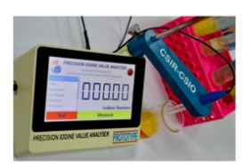
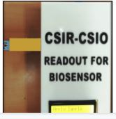
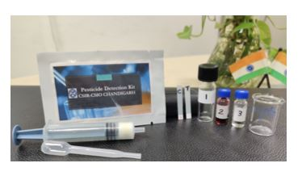
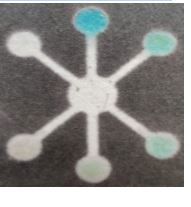

CSIR-Central scientific Instruments Organisation
V-1(B)-Sensors, Systems and Algorithms Lab
Research Areas
We expound on a plethora of sensing applications and are working in-depth analysis, opportunities and challenges for using magic materials in chemistry such as composites of conducting polymers, metalloporphyrins, organometallic compounds and molecularly imprinted polymers along with variable functionalities. The unique properties of these materials have made them to be widely used materials in the field of chemistry and material science.
Sensors
We expound on a plethora of sensing applications and are working in-depth analysis, opportunities and challenges for using magic materials in chemistry such as composites of conducting polymers, metalloporphyrins, organometallic compounds and molecularly imprinted polymers along with variable functionalities. The unique properties of these materials have made them to be widely used materials in the field of chemistry and material science.
Conducting polymers and composites: (Funded by CSIR-India, DST-India)

Poly-conjugated structure of conducting polymers with alternate single and double bonds along the polymer backbone, imparts tunable and unique electrical, chemical and optical properties. We have been extensively exploring these tunable functionalities for gas/odour sensing applications. Our work involves tailoring the structural and chemical properties of these polymer conjugates for sensing modulation (resistive, electrochemical,impedance and optical based). Furthermore, we are investigating in-depth sensing/interaction mechanisms through simulation and experimental approaches.
Research Topic/Work
Metalloporphyrin based sensors for food quality (Funded by CSIR, India):

We are trying to develop an array composed of chemoreceptive metallo-porphyrins whose color changes on interaction with a volatile analyte. Porphyrin structure is composed of delocalized π-electrons within a tetrapyrollic skeleton. The magnitude of sensing response can be tuned by modifying the central metal atoms or ligands. There are still many challenges and unanswered questions in the literature pertaining to the immobilisation, reproducibility, recovery as a sensor; and most importantly, the interaction behaviour with the analytes. We intend to investigate the solutions for these challenges by using computational and experimental approaches.
Research Topic/Work
Metal organic frameworks as chemosensors for water quality (Funded by CSIR, India)
MOFs are ordered structures made of repeating structural units which may show electrochemical activity depending upon metal ions and linkers. Properties like huge surface area, porosity, desirable functionality and pore size make MOFs as potential material not only for electrochemical sensing but also for other applications like catalysis, gas storage & separation, adsorption, super capacitors, sensors.
Conducting biomimetic based sensor for food pathogens (Funded by CSIR, India)
Biomimetic sensors tend to replicate the sensitive and selective mechanisms that are found in biological systems and incorporate these properties into functional sensing platforms. Molecularly imprinted polymers (MIPs) are one of those biomimetic sensors which can form high affinity binding sites complementary to the specific analyte of interest. They produce sensitive and selective recognition of target analytes utilizing the shape, size, and functionality of the same.
2D materials as sensing platforms for anemia and oxidative biomarkers (Funded by CSIR, India)
Since the discovery of graphene in the year 2000, there has been a tremendous boost in the field of 2-D materials. Apart from graphene, many more 2-D materials have been found out. These are broadly classified as graphene family, 2-D chalcogenides and 2-D oxides. These materials are traditionally semiconductor in nature and hence have a variety of applications like energy generation and storage devices, electronic devices etc. And at the same time, their chemical stability, biocompatibility, and mechanical strength make them a potential candidate for the sensing platform.
Systems
Precision Iodine Value Analyser (PIVA), patented technology

A portable device for the determination of degree of unsaturation in edible oils.
Electronic Nose and Tongue system development (funded by CSIR-India)
System development for livestock emissions (funded by DST-India)(provide link for brochure/pamphlet)
Optical system for detection of polyaromatic hydrocarbons (funded by CSIR, India)
Rancidity indicator strips for edible oils (funded by CSIR)
Electrochemical system for detection of cardiac troponin I (funded by CSIR)

Optical testing card for pesticide detection (Funded by CSIR)

Optical system development for the detection of toxins in food and water (DBT-India)
Development of Paper based device for cancer biomarkers (ICMR-India)
